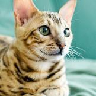

Adopted from a friend that was in need. She is having a terrible time adjusting to new home, doesn't seem to like toddlers very much, she was fine with older children. She's very cute and likes to have your attention once comfortable.
Noodles is a great and affectionate cat but needs a forever home. After putting in much time effort and vet visits, we have been unable to regulate his urinating. While he usually urinates in his litter box, every week or so he likes to pee on our bed, or laundry hamper. While we have tried to figure out the source of this issue the last year, we have been unsuccessful in getting him to consistently urinate in the box. Aside from this issue, I really love Noodles and I wish I didn't have to get rid of him, but moving into our new apartment, we cannot afford the amount for future cleaning services after moving and our place smelling of urine.
Just a timid flower, waiting to take root in a place I can call home. What do you think? Are you willing to take me in and let my heart blossom? In turn I promise to be your devoted companion. I will be pleased to sit by your side, receiving the occasional pat on the head. I will be eager to go for a morning walk or have a fun day playing in the back yard. I will make friends with your other dog, but I might insist on being boss, but I do mind sharing my flower bed with cats- I’m a pretty bossy gal and like to pester them! Calm respectful children 12+, are welcome too. I also keep my little flower pot, aka crate, free of debris or refuse. It may take me a moment to trust, but if you are patient and seeking a new best friend I will root myself right in your heart!